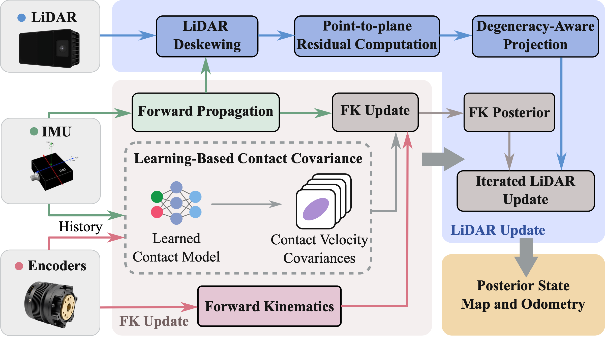

Learning Wheel Motion Uncertainty
for Degeneracy-Aware LiDAR-Inertial Odometry on Quadrupedal Wheel-Legged Robots
Method Overview

Given IMU, encoder, and LiDAR measurements, a learned covariance network (CovNet) predicts wheel-motion process covariances from proprioceptive history, while degeneracy-aware projection (DAP) suppresses direct LiDAR information along geometrically weak directions during the LiDAR update. The system then fuses these measurements to estimate the robot state and build a point cloud map.
Abstract
Wheel kinematics can support odometry for quadrupedal wheel-legged robots when LiDAR geometry provides weak motion constraints. However, slip and contact loss make rolling predictions unreliable, and contact state alone cannot determine their reliability across motion directions. We propose a tightly coupled LiDAR–inertial–kinematic odometry framework that retains analytical rolling predictions and learns per-wheel, direction-dependent process covariances from proprioceptive history. The estimator maintains moving wheel-center states, allowing the learned uncertainty to regulate the influence of rolling predictions through forward-kinematic corrections. Degeneracy-aware projection (DAP) complements this mechanism by suppressing LiDAR constraints along geometrically weak directions. The learned covariance network (CovNet) is trained through a differentiable filter using simulated velocity supervision and deployed on the real robot without fine-tuning. On the six room sequences with the highest degeneracy ratios in our indoor dataset, the method reduces mean per-sequence position root mean square error (RMSE) by 66.2% relative to FAST-LIO2 and by 31.0% relative to a fixed-covariance variant. In a severely degenerate corridor run, it achieves an endpoint position error of 0.198 m, compared with 7.531 m for FAST-LIO2. These results demonstrate robust odometry under challenging geometric and wheel-motion conditions. We plan to publicly release our code and multimodal dataset.
BibTeX
@unpublished{wei2026wheelmotionuncertainty,
title={Learning Wheel Motion Uncertainty for Degeneracy-Aware LiDAR-Inertial Odometry on Quadrupedal Wheel-Legged Robots},
author={Hairuo Wei and Yunfan Ren and Renda Yang and Qiangsheng Huang and Zhongyu Li},
year={2026},
note={Manuscript; arXiv submission pending}
}Acknowledgements
This work was supported in part by the InnoHK initiative of the Innovation and Technology Commission of the Hong Kong Special Administrative Region Government via the Hong Kong Centre for Logistics Robotics. This work was also supported in part by project MMT-p8-26 of the Shun Hing Institute of Advanced Engineering, The Chinese University of Hong Kong.